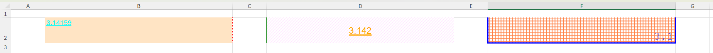
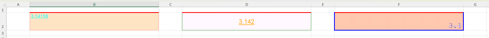
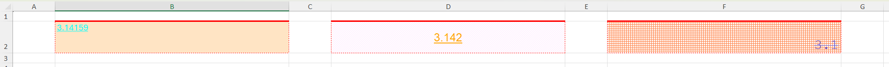
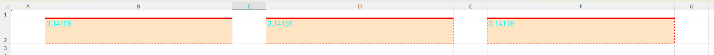
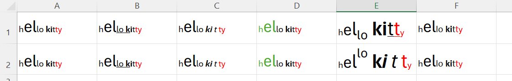
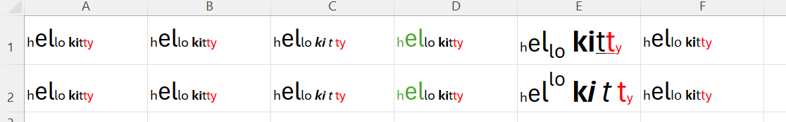
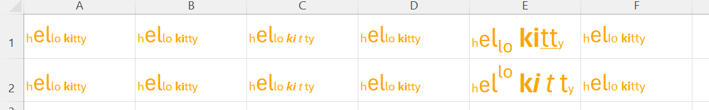
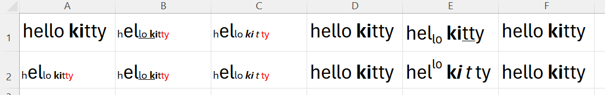
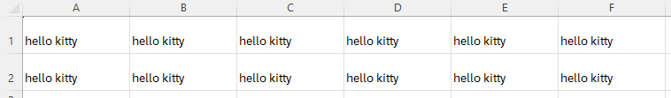

Cell formats
Excel formatting
Each cell in an Excel spreadsheet may refer to an Excel style. Multiple cells can refer to the same style and therefore have a uniform appearance. A style defines the cell's alignment directly (as part of the style definition), but it may also refer to further formatting definitions for font, fill, border, format. Multiple styles may each refer to the same fill definition or the same font definition, etc, and therefore share these formatting characteristics. This hierarchy can be shown like this:
`Cell`
│
`Style` => `Alignment`
│
┌──────────┬────┴─────┬─────────┐
│ │ │ │
`font` `fill` `border` `format`A family of setter functions is provided to set each of the formatting characteristics Excel uses. These are applied to cells, and the functions deal with the relationships between the individual characteristics, the overarching style and the cell(s) themselves.
Setting format attributes of a cell
Set the font attributes of a cell using XLSX.setFont. For example, to set cells A1 and A5 in the general sheet of a workbook to specific font values, use:
julia> using XLSX
julia> f=XLSX.opentemplate("general.xlsx")
XLSXFile("general.xlsx") containing 13 Worksheets
sheetname size range
-------------------------------------------------
general 10x6 A1:F10
table3 5x6 A2:F6
table4 4x3 E12:G15
table 12x8 A2:H13
table2 5x3 A1:C5
empty 1x1 A1:A1
table5 6x1 C3:C8
table6 8x2 B1:C8
table7 7x2 B2:C8
lookup 4x9 B2:J5
header_error 3x4 B2:E4
named_ranges_2 4x5 A1:E4
named_ranges 14x6 A2:F15
julia> s=f["general"]
10×6 XLSX.Worksheet: ["general"](A1:F10)
julia> XLSX.setFont(s, "A1"; name="Arial", size=24, color="blue", bold=true)
2
julia> XLSX.setFont(s, "A5"; name="Arial", size=24, color="blue", bold=true)
2The function returns the fontId that has been used to define this combination of attributes.
There are more font attributes that can be set. Setting attributes for a cell that already has some, merges the new attributes with the old. Thus:
julia> XLSX.setFont(s, "A5"; italic=true, under="double", bold=false)
3will over-ride the bold setting that was previously defined and add a double underline and make the font italic. However, the color, font name and size will all remain unchanged from before. This new combination of attributes is unique, so a new fontId has been created.
Font colors (and colors in any of the other formatting functions) can be set using a hex RGB value or by name using any of the colors provided by Colors.jl
The other set attribute functions behave in similar ways. See XLSX.setBorder, XLSX.setFill, XLSX.setFormat and XLSX.setAlignment.
Formatting multiple cells at once
Applying setAttribute to multiple cells
Each of the setter functions can be applied to multiple cells at once using cell-ranges, row- or column-ranges or non-contiguous ranges. Additionally, indexing can use integer indices for rows and columns, vectors of index values, unit- or step-ranges. This makes it easy to apply formatting to many cells at once.
Thus, for example:
julia> using XLSX
julia> f=XLSX.newxlsx()
XLSXFile("C:\...\blank.xlsx") containing 1 Worksheet
sheetname size range
-------------------------------------------------
Sheet1 1x1 A1:A1
julia> s=f[1]
1×1 XLSX.Worksheet: ["Sheet1"](A1:A1)
julia> s[1:100, 1:100] = "" # Ensure these aren't `EmptyCell`s.
""
julia> XLSX.setFont(s, "A1:CV100"; name="Arial", size=24, color="blue", bold=true)
-1 # Returns -1 on a range.
julia> XLSX.setBorder(s, "A1:CV100"; allsides = ["style" => "thin", "color" => "black"])
-1
julia> XLSX.setAlignment(s, [10, 50, 90], 1:100; wrapText=true) # Wrap text in the specified rows.
-1
julia> XLSX.setAlignment(s, 1:100, 2:2:100; rotation=90) # Rotate text 90° every second column in the first 100 rows.
-1It is even possible to use defined names to index these functions:
julia> XLSX.addDefinedName(s, "my_name", "A1,B20,C30") # Define a non-contiguous named range.
XLSX.DefinedNameValue(Sheet1!A1,Sheet1!B20,Sheet1!C30, Bool[1, 1, 1])
julia> XLSX.setFill(s, "my_name"; pattern="solid", fgColor="coral")
-1When setting format attributes over a range of cells as decribed, the new attributes are merged with existing on a cell by cell basis. If you set the font name on a range of cells that previously all had different font colors, the color differences will persist even as the font name is applied to the range consistently.
Setting uniform attributes
Sometimes it is useful to be able to apply a fully consistent set of format attributes to a range of cells, over-riding any pre-existing differences. This is the purpose of the setUniformAttribute family of functions. These functions update the attributes of the first cell in the range and then apply the relevant attribute Id to the rest of the cells in the range. Thus:
julia> XLSX.setUniformBorder(s, "A1:CV100"; allsides = ["color" => "green"], diagonal = ["direction"=>"both", "color"=>"red"])
2 # This is the `borderId` that has now been uniformly applied to every cell.This sets the border color in cell A1 to be green and adds red diagonal lines across the cell. It then applies all the Border attributes of cell A1 uniformly to all the other cells in the range, overriding their previous attributes.
All the format setter functions have setUniformAttribute versions, too. See XLSX.setUniformBorder, XLSX.setUniformFill, XLSX.setUniformFormat and XLSX.setUniformAlignment.
Setting uniform styles
It is possible to use each of the setUniformAttribute functions in turn to ensure every possible attribute is consistently applied to a range of cells. However, if perfect uniformity is required, then setUniformStyle is considerably more efficient. It will simply take the styleId of the first cell in the range and apply it uniformly to each cell in the range. This ensures that all of font, fill, border, format, and alignment are all completely consistent across the range:
julia> XLSX.setUniformStyle(s, "A1:CV100") # set all formatting attributes to be uniformly the same as cell A1.
7 # this is the `styleId` that has now been applied to all cells in the rangeIllustrating the different approaches
To illustrate the differences between applying setAttribute, setUniformAttribute and setUinformStyle, consider the following worksheet, which has very hetrogeneous formatting across the three cells:

We can apply setBorder() to add a top border to each cell:
julia> XLSX.setBorder(s, "B2,D2,F2"; top=["style"=>"thick", "color"=>"red"])
-1This merges the new top border definition with the other, existing border attributes, to get

Alternatively, we can apply setUniformBorder(), which will update the borders of cell B2 and then apply all the border attributes of B2 to the other cells, overwriting the previous settings:
julia> XLSX.setUniformBorder(s, "B2,D2,F2"; top=["style"=>"thick", "color"=>"red"])
4This makes the border formatting entirely consistent across the cells but leaves the other formatting attributes (font, fill, format, alignment) as they were.

Finally, we can set B2 to have the formatting we want, and then apply a uniform style to all three cells.
julia> XLSX.setBorder(s, "B2"; top=["style"=>"thick", "color"=>"red"])
4
julia> XLSX.setUniformStyle(s, "B2,D2,F2")
19Which results in all formatting attributes being entirely consistent across the cells.

Performance differences between methods
To illustrtate the relative performance of these three methods, applied to a million cells:
using XLSX
function setup()
f = XLSX.newxlsx()
s = f[1]
s[1:1000, 1:1000] = pi
return f
end
do_format(f) = XLSX.setFormat(f[1], 1:1000, 1:1000; format="0.0000")
do_uniform_format(f) = XLSX.setUniformFormat(f[1], 1:1000, 1:1000; format="0.0000")
function do_format_styles(f)
XLSX.setFormat(f[1], "A1"; format="0.0000")
XLSX.setUniformStyle(f[1], 1:1000, 1:1000)
end
function timeit()
f = setup()
do_format(f)
do_uniform_format(f)
do_format_styles(f)
f = setup()
print("Using `setFormat` : ")
@time do_format(f)
f = setup()
print("Using `setUniformFormat` : ")
@time do_uniform_format(f)
f = setup()
print("Using `setUniformStyle` : ")
@time do_format_styles(f)
return f
end
f=timeit()which yields the following timings:
Using `setFormat` : 10.966803 seconds (256.00 M allocations: 19.771 GiB, 18.81% gc time)
Using `setUniformFormat` : 2.222868 seconds (31.00 M allocations: 1.137 GiB, 19.48% gc time)
Using `setUniformStyles` : 0.519658 seconds (14.00 M allocations: 416.587 MiB)The same test, using the more involved setBorder function
do_format(f) = XLSX.setBorder(f[1], 1:1000, 1:1000;
left = ["style" => "dotted", "color" => "FF000FF0"],
right = ["style" => "medium", "color" => "firebrick2"],
top = ["style" => "thick", "color" => "FF230000"],
bottom = ["style" => "medium", "color" => "goldenrod3"],
diagonal = ["style" => "dotted", "color" => "FF00D4D4", "direction" => "both"]
)gives
Using `setBorder` : 29.536010 seconds (759.00 M allocations: 64.286 GiB, 22.01% gc time)
Using `setUniformBorder` : 2.052018 seconds (31.00 M allocations: 1.197 GiB, 13.18% gc time)
Using `setUniformStyles` : 0.599491 seconds (14.00 M allocations: 416.586 MiB, 15.20% gc time)If maintaining heterogeneous formatting attributes is not important, it is more efficient to apply setUinformAttribute functions rather than setAttribute functions, especially on large cell ranges, and more efficient still to use setUniformStyle.
Copying formatting attributes
It is possible to use non-contiguous ranges to copy format attributes from any cell to any other cells, whether you are also updating the source cell's format or not.
julia> XLSX.setBorder(s, "BB50"; allsides = ["style" => "medium", "color" => "yellow"])
3 # Cell BB50 now has the border format I want!
julia> XLSX.setUniformBorder(s, "BB50,A1:CV100") # Make cell BB50 the first (reference) cell in a non-contiguous range.
3
julia> XLSX.setUniformStyle(s, "BB50,A1:CV100") # Or if I want to apply all formatting attributes from BB50 to the range.
11Rich text formats
Text in a cell can have font formats applied to any substring element as in this example:

This is referred to here as rich text formatting.
These rich text formats are stored separately from the cell Style and over-ride any Style-based formatting.
The setFont, setUniformFont and setUniformStyle functions operate at the cell level and cannot appply formatting at a substring level. Instead, using any of these functions will remove from a cell's rich text format any attributes that these functions are themselves applying or updating to the whole cell, but will leave the remaining rich text format attributes in place.
For example, to remove the underlining in column B:
julia> setFont(s, "B"; under="none")
-1
The underlining has been removed, but the other rich text formats remain in place.
Applying setUniformFont to a range of cells will remove those elements of the rich text format that are now being applied to the whole cell so that those elements become uniform. Any other heterogeneity arising from rich text formats (which over-ride Style-based formatting) will remain. For example:
julia> setUniformFont(s, "A1:F2"; color="orange")
23
Similarly, applying setUniformStyle to a range of cells will remove those elements of the rich text format that are now being applied to the whole cells so that those elements become uniform. Any other heterogeneity arising from rich text formats will remain.
Rich text formats only affect the font settings; other elements of the style (number format, borders, fill, alignment) will be unaffected and will be applied uniformly to the range.
To illustrate, starting from the initial Excel file above, and using setUniformStyle to apply the Style in cell A1 to the cells D1:F2:
julia> setFont(s, "A1"; size=20) # make sure cell A1 has the formatting we want
22
julia> XLSX.getFont(s, "A1") # just to illustrate the cell A1 Style's font attributes
XLSX.CellFont(22, Dict{String, Union{Nothing, Dict{String, String}}}("name" => Dict("val" => "Aptos Narrow"), "sz" => Dict("val" => "20"), "color" => Dict("theme" => "1")), "1")
julia> setUniformStyle(s, "A1,D1:F2") # apply cell A1's Style to cells D1:F2
1
The Style for cell A1 has a specified font, size and color. These have been uniformly applied to the range D1:F2, but the other rich text attributes (in this case, bold, italic, underline, super- and sub-script) retain the original heterogeneity.
If the first cell in the specified range has no defined Style (s=""), all cells will be given the same undefined style and any rich text formatting will remain unchanged.
In Excel, subscript and superscript formatting to a substring (for example) can only be made using this kind of rich text formatting, and cannot be set at cell level (neither in Excel nor in setFont). Retaining rich text format heterogeneity in the ways described here preserves these string formatting elements through format changes.
To clear any rich text formatting and remove the heterogeneity it introduces, simply copy the cells over themselves. This strips out all formatting and style information from the cells, leaving only the cell content. For example, for arbitrary cells:
julia> for row=1:2, col=1:6; s[row,col] = s[row,col]; endor, for tabular data:
julia> writetable!(s, gettable(s, "A:F"; header=false); write_columnnames=false)
An XLSXFile must be opened in write mode for rich text formatting to be editable, otherwise an error is thrown.
Setting column width and row height
Two functions offer the ability to set the column width and row height within a worksheet. These can use all of the indexing options described above. For example:
julia> XLSX.setRowHeight(s, "A2:A5"; height=25) # Rows 2 to 5 (columns ignored)
julia> XLSX.setColumnWidth(s, 5:5:100; width=50) # Every 5th column up to column 100.Excel applies some padding to user specified widths and heights. The two functions described here attempt to do something similar but it is not an exact match to what Excel does. User specified row heights and column widths will therefore differ by a small amount from the values you would see setting the same widths in Excel itself.